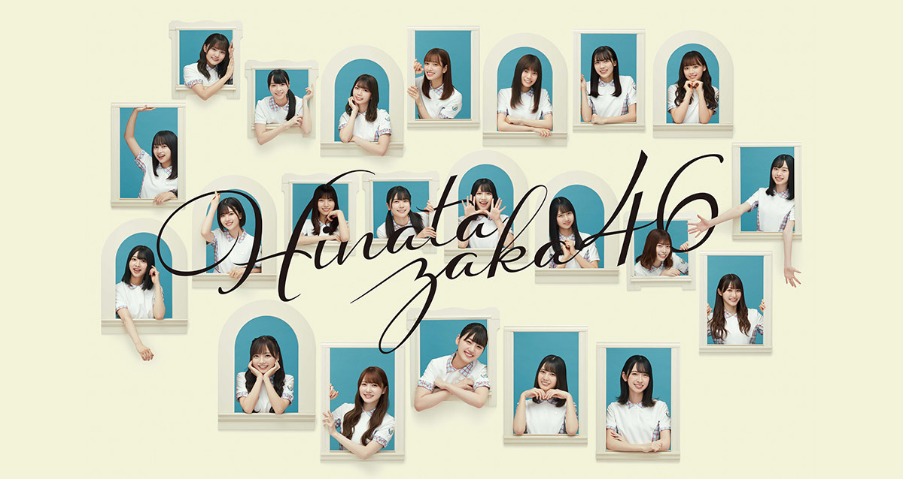

Hinatazaka46
日向坂46という日本アイドルグループ.

Hinatazaka46, Japanese Idol Group with Kosaka Nao serves as center in 1st single/single debut "Kyun" which is released on March 2019.
Hinatazaka46 History
2019:- February: Rename from "Hiragana Keyakizaka46" onto "Hinatazaka46".
- March: Released debut single "Kyun" with Kosaka Nao serves as center.
- July: Released 2nd single "Doremisolasido" with Kosaka Nao serves as center.
- August: OG Member, Kakizaki Memi, graduated from group. And released 1st photogroup "Tachikogi"
- September: Released 3rd single "Konna ni Suki ni Natchatte Ii no?" with Kosaka Nao serves as center
- February: Released 4th single "Sonna Koto Nai Yo" with Kosaka Nao serves as center. New members 3rd gen enters.
- July: Hinatazaka46 made live online concert for the first time
- September: Released 1st album group "Hinatazaka" with Sasaki Mirei serves as center
- Desember: Perform Live Online "Hinakuri 2020" at Christmas
- April: Release 2nd photogroup "Hina Satsu"